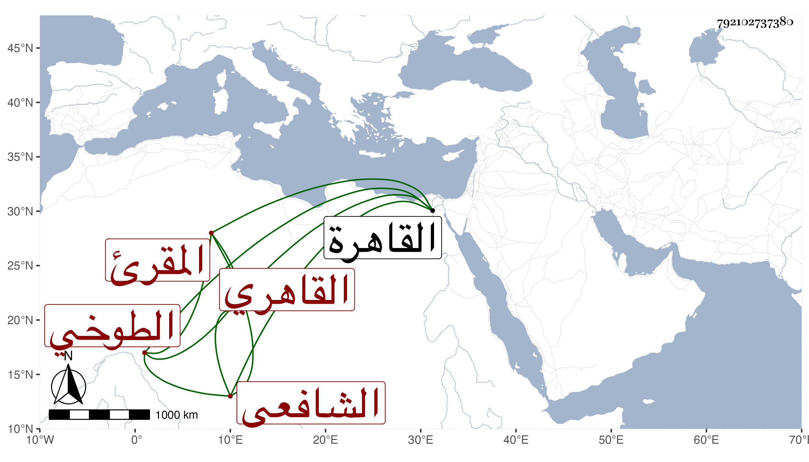

0902Sakhawi.DawLamic.ITO20230111-ara1.EIS1600.792102737380
Biography ID: 792102737380
315
عبد الملك بن حسين بن علي بن إسماعيل بن محمد الزين والتاج أبو المكارم ابن البدر بن النور الطوخي الأصل القاهري الشافعي المقرئ . ولد في سنة خمس وسبعين وسبعمائة بالقاهرة ونشأ بها فحفظ القرآن والشاطبيتين واعتنى بالقراءات فتلا على والده للسبع إفرادا ثم جمعا وكذا على الغرس خليل المشبب والشرف يعقوب الجوشني والنشوي والزراتيتي والفخر الضرير الإمام وأذن له الفخر في الإقراء في سنة إحدى وثمانمائة وتلا على التنوخي أيضا للسبع لكن إلى المفلحون ورفيقا للزراتيتي أحد شيوخه من أول الأحقاف إلى آخر القرآن وعرض عليه الشاطبيتين حفظا وسمع اللامية منهما قبل ذلك على الشمس العسقلاني وأخذ في الفقه يسيرا عن السراج البلقيني ثم عن الشمس الغراقي وقرأ المجموع في الفرائض على الشهاب العاملي وسمع على عزيز الدين المليجي صحيح البخاري وعلى الصلاح البلبيسي صحيح مسلم وأدب الأطفال وقتا وقصده الطلبة بأخرة في القراءات والسماع وممن قرأ عليه الزين جعفر السنهوري وكذا أخذت عنه في آخرين من الفضلاء ، وكان ساكنا صالحا محبا في الإسماع كثير التلاوة فقيرا قانعا . مات في مستهل رجب سنة ثمان وخمسين رحمه الله وإيانا .
